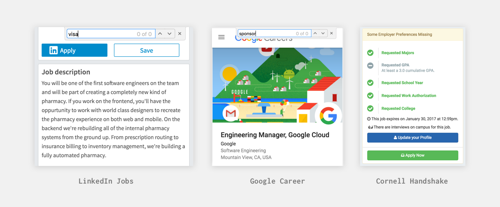
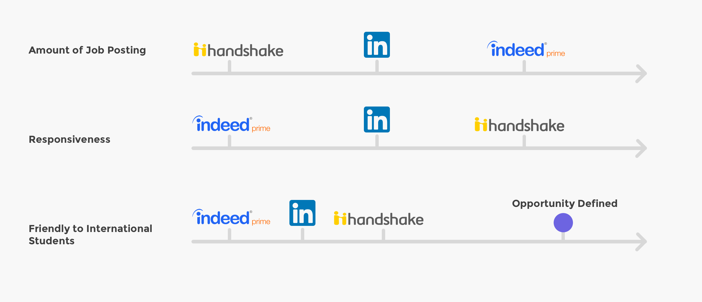
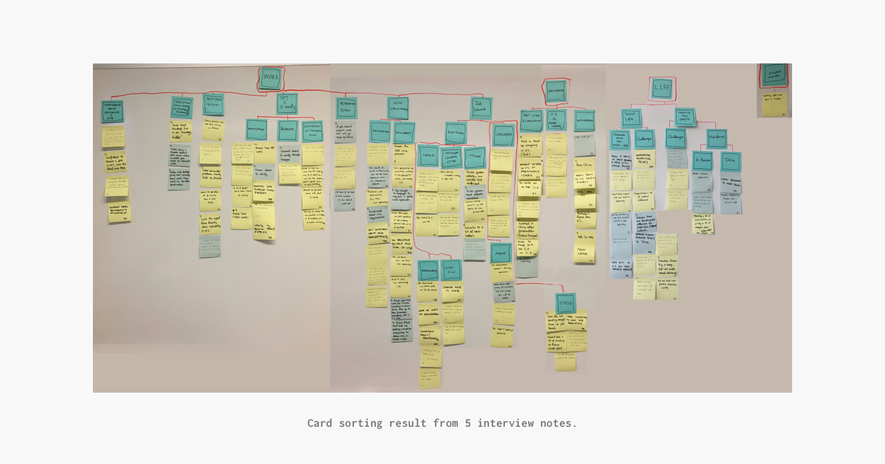
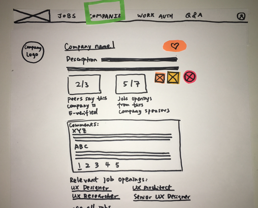
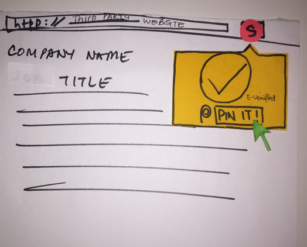
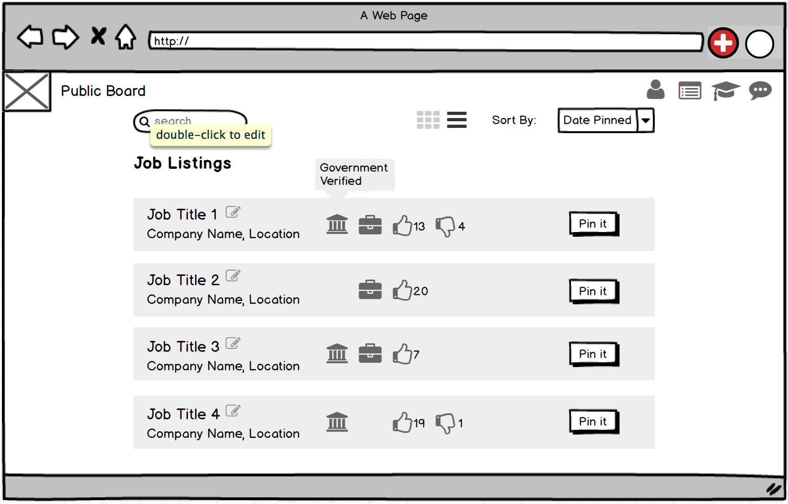
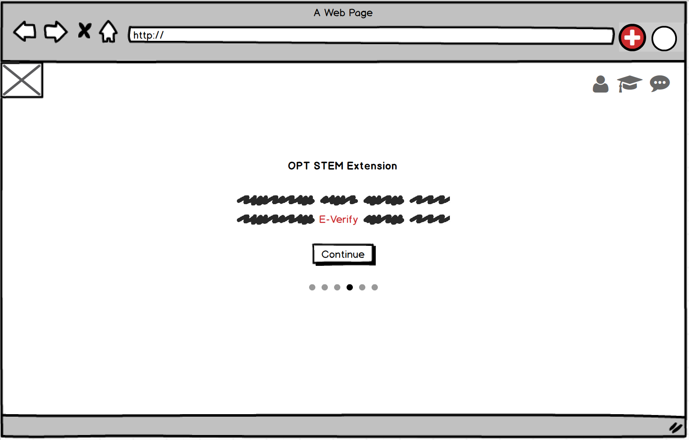

International students find it hard to find work authorization information on online job searching platforms.
Work authorization is essential for international students to work in the U.S. However, the current online job hunting platforms mostly lack of this information on their job postings page. This not only causes international students' stuggling of finding the information, but also a waste of time for both employers and employees to process without reaching an agreement on whether to provide work authorization.
Improving the transparency of work authorization information will make the job hunting experience happier for students and also help companies to lower the costs of hiring.
Understand what are the pain points through the user journey and what are some core problems to solve.
Interviewing 5 participants who are all STEM major international students at Cornell and are all actively looking for jobs, we introduced our persona Lilly Li and instilled our opportunities:
Lilly lacks the knowledge of E-Verify and other work authorization terms.
How might we educate users of work authorization policies?
Lilly goes back and forth to check E-Verify information on the government website. Also, she finds the the list to be unreliable and outdated.
How might we provide more accurate and accessible governmental information?
Lilly finds asking HRs about sponsorship time-consuming and uncomfortable.
How might we provide a time-saving and comfortable way to acquire information form companies?
Provide a job posting platform that has work authorization information.
After discussing around 100 ideas that the group came up with, we agreed on creating a job posting platform specially for international students. Our initial design has 4 basic ideas:
Work Authorization Education Center
User vote about E-verify
Filterable Listing Page
Browser Extension
Users liked our web browser extension but were skeptical about the reliability of our source of infomarmation and also how we could compete with other existing success platforms.
We gathered both nagative and postive feedback about our design.
Deeper understanding of the user brings us the opportunity of supporting user's behavior rather than changing it.
To find new opportunities, we revisited our interview note and iterated our persona. This time, I noticed two interesting fact that we ignored before:
Users look for job postings on multiple platforms, but then went back to companies' official website to apply.
Instead of building another platform to be a competition, how might we support their behavior on existing platforms?
Users can apply for more than 100 jobs at the same time. They use Excel and Bookmarks to manage it.
How might we provide more effective ways to help them manage the process of job application?
Looking at user behavior for one more time, I believe our red sea lies in supporting their job searching on official website and famous job searching platform. I then got inspiration from Pinterest and proposed this new idea to my team:
Treat our browser extension as the core and the entrance; allow users to pin interested jobs to our platform; on our platform, provide a management tool to help international students manage their job application.
Give up collecting job lists ourselves, instead, as users pin jobs from other website, we can gather all the entrance and have a bottom-to-top list of job postings that works for international students.
In short, the goal of the new design is:
Being supportive!
From mid-fi to high-fi, we iterated the idea to be a working system.
Now, the most important problem becomes: what are the usability problems behind our interface? We sit down as a group and conducted a Heuristic Evaluation using Nielsen's 10 heuristics for user interface design.
Browser Extension
Public Board
Personal Board
Educational Tutorial
Based on the result of heuristic evaluation, we improved detailed-level interaction and visual design and created a high-fidelity prototype.
Voice from user helps us jump out of our own brain.
Through the Heuristic Evaluation, the system with basic UX problems excluded has worked on our own brain, but we need the voice from the user. We recruited 5 users to test the usability of our product. Users were to conduct 4 major tasks:
Following are the top 3 UX problems we identified from the usability testing:
We made three major changes based on users' feedback:
Go Through Educational Information
Pin a Job to User's Personal Board
Manage Job Postings on Personal Board
Bottom-to-top Public Job Board & E-Verified Company List
We haven't spare enough thoughts on how to help people to manage job application process more effectively.
All my teammates were happy about the result we got and aspire to work together to implement it. But I want to ask ourselves two more questions before we move on:
I look forward to go back to work on those new opportunities soon.😁